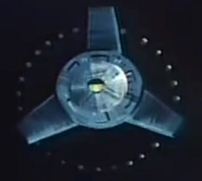
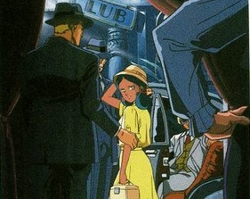

|
Side 6 Bunch 20 Mirrored Colony Cluster One of the many colony clusters of Side 6, Baldur Bey is the site of the former Flanagan Institute, which moved to Granada shortly after top secret military technology was stolen from it. Now that the Flanagan institute is gone, it is simply one of the many clusters of Side 6, ten million colonists living in each of the bunches domed cylinders. Baldur Bey & Haven  |